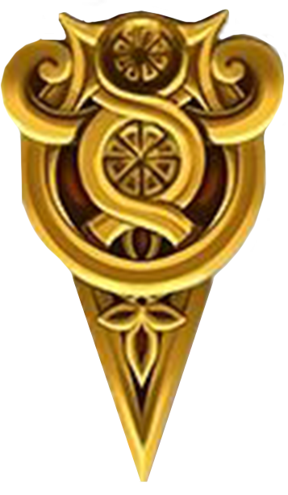

RETRY
QUIT

Vall
Bosc
Despertes estirat en un camp, mirant cap al blau cel parcialment cobert per núvols blancs. No recordes com has arribat en aquest paratge, així que sense més dilació, decideixes explorar la zona.
Més enllà del camp trobes dos camins, un porta cap a un bosc i l’altre va direcció a una vall.
Vall
Bosc
La Saber, orgullosa de que haguessis encertat l’enigma, et porta de nou al principi de l’aventura mitjançant un encanteri, i abans de marxar, et diu que en aquest món hi ha una altra persona que si no la fas enfadar, podrà fer el retorn al teu món possible.
Havent encertat la pregunta de la Saber, tornes al començament on hi havia el camí del bosc i el de la vall. Al arribar-hi sents que ja has fet tot el que s’havia de fer en el bosc, i creus que hauries d’explorar la vall.
Riu
Casa
Arribes a una vall coberta amb una gespa verdosa, el cel s’ha ennuvolat donant una sensació de solitud, però tampoc et deixava una mala sensació.
No molt lluny veus una casa de camp, amb un aspecte bastant antic, i més endavant veus un riu.
Pots entrar a la casa o seguir el riu.
Cova
Explorar
T’adentres en un bosc amb un aire una mica lúgrube i solitari, potser massa i tot per un bosc. Els arbres estan desfullats. les fulles seques reposen en el terra, movent-se amb l’aire que travessa aquest bosc. Decideixes avançar endavant, tot i el sinistre aspecte del bosc.
Et trobes amb una cova, però encara et queda bosc per explorar.
Seguir
Tornar
Entres a la cova, amb prou feines veus per on trepitges, cada cop que respires, notes l’aire carregat d’humitat, dificultant la respiració. Escoltes el goteig de l’aigua que ressona per tota la cova.
Pots seguir endavant o tornar al bosc.
De la foscor apareix una espècie de esquelet, sense crani, exceptuant la mandíbula, mostrant unes dents afilades i negres; per la forma del seu esquelet, veus que no és de una persona humana. La criatura va armada amb una espasa gran d’un material semblant a una roca.
Te'n adones que haver entrat a la cova ha sigut el pitjor error que has pogut cometre. Amb el pànic dins del cos, mires de fugir, però les teves cames fallen només d’intentar córrer.
Quan aconsegueixes aixecar-te, notes una sensació freda a l’estómac i la teva visió es torna vermella. Baixes la mirada i veus que l’espasa de l’esquelet coberta de sang et surt de la part inferior de l’abdomen. (MORS)
[Prem el boto RETRY Adalt a l'esquerra]
Tornar
Entrar
Més endins del bosc, perdut entre els arbres trobes un castell que curiosament no està en runes. Fas un rodeig al castell i trobes l’entrada, la qual està oberta.
Pots entrar o tornar al principi.
Ximpanzés
Humans
Et trobes en una sala amb una decoració molt ostentosa, de classe alta. Te’n adones que en el sofà hi ha una noia assentada. La primera impressió que et deixa la noia és la seva pell blanca, el seu cabell ros com una espiga d’or i l’aire de noblesa que desprèn. Amb total solemnitat la noia s’aixeca i s’acosta a tu, i es presenta com Saber, la propietària d’aquest castell.
Amb una parla delicada i un to delicat com la seva figura, et proposa un enigma que, si el respons correctament, rebràs un obsequi, mentre que si respons erròniament, hauràs de marxar del castell.
Sense cap dilació tu acceptes l’enigma.
La Saber satisfeta amb la teva elecció et proposa l’enigma que diu:
Quin ésser viu camina de quatre potes al matí, camina dret per la tarda i camina amb tres potes per la nit?
La Saber canvia a una expressió de serietat mentre agafa una espasa de kendo, mires de fugir però amb gran agilitat i rapidesa, la Saber fa un salt per escurçar distàncies i de un sol cop et deixa K.O.
[Prem el boto RETRY Adalt a l'esquerra]
Retorna
Entres a la casa, l’examines i no trobes cap pista que t’ajudi a sortir d’aquest món, només trobes alguna mena de pilar derruït, per tant que decideixes sortir de la casa i tornar a la vall.
Marxar
Temple
Decideixes seguir el riu amb la sort de trobar algú a qui puguis preguntar sobre aquest món i com sortir d’ell. L’aigua cristallina del riu omple el teu cor de benestar i serenitat, mentre segueixes el seu curs en la vorera.
Arribes a una especie de temple grec a la vora del mar. Pots marxar o entrar al temple
Serp
Centpeus
Entres al temple i el primer que veus és una dona alta amb un cabell fúcsia, tant llarg que li arriba als talons. Vestida amb un vestit negre i morat i una màscara que li tapa els ulls. La dona s’agafa la barbeta amb la mà, de forma pensativa. Per no interrompre, examines el temple i veus que està cobert de unes estranyes estàtues. Mai n’havies vist cap com aquelles. Les expressions facials son de terror, com si haguessin estat vives. Et quedes absent observant els voltants fins que la dona crida la teva atenció.Té una veu serena, però es pot notar un aire de perill en l’atmosfera.
La dona es presenta com a Medusa, i t’explica que ella té el poder de fer-te tornar al teu món, però per fer-ho, hauràs de encertar una endevinalla que ella et proposarà.
Acceptes la proposta, i la Medusa prossegueix amb l’endevinalla.
-Tinc cap i no tinc peus, i fuges així quan em veus… què sóc?
Segueix
Et despertes en una sala amb un altar, i recordes que just després de respondre l’endevinalla la Medusa et comenta que per tornar al teu món simplement has de tocar l’altar amb les dues mans i et portarà al final d’aquest viatge.
Segueix
T’acostes a l’altar i recordes les paraules de la Medusa, per tant que amb cert nerviosisme,
col·loques les dues mans al altar, i al cap d’uns segons, la sala s’il·lumina i allibera una llum blanca segadora.
L’expressió de la medusa es torna demoníaca, els seus ulls es tornen negres i vermells com els de una bèstia rabiosa. Amb una veu que ressona dins el teu cap, infestada de ira, et diu que és impossible que existeixi una persona tant ignorant com tu, com per fallar la endevinalla.
El teu cos es queda paralitzat per la seva mirada, i amb un moviment ràpid i amb força, extreu el teu cor del teu cos tant fàcilment com si agafessis una fulla del terra.
[Prem el boto RETRY Adalt a l'esquerra]
Credits
Quan recuperes la vista et trobes en un camp cobert de flors, en el qual el suau vent s’emporta alguns pètals blancs mentre acaricia el teu rostre amb una frescor relaxant.
Divises una estructura de pedra més endavant. Lentament, t’acostes a l’estructura de manera instintiva i et quedes dret al mig d’ella. Lentament observes el paisatge al voltant teu, mentre tot desapareix poc a poc, la teva visió es comença a entelar mentre et preguntes a tu mateix si això ha sigut un somni o era una realitat.
FI